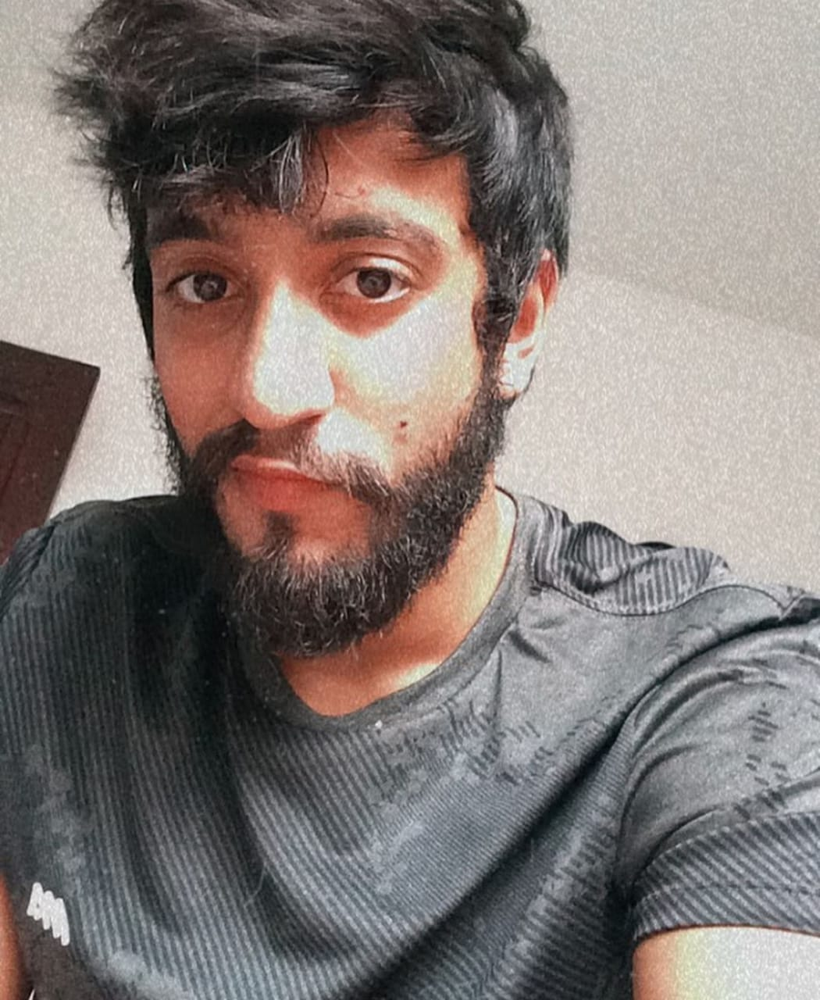

QUEM SOMOS
Ariel
analise e desenvolvimento
de sistemas
Gosta de jogar videogame, ler e conversar sobre quase tudo, tem 21 anos e sempre tenta fazer tudo que puder
para ajudar seus amigos e colegas. Sabe seus limites e não
deixa eles o impedir de tentar ajudar. Almeja se tornar um técnico de informática e se dedicar ao máximo ao seu
trabalho.
Sara
analise e desenvolvimento
de sistemas
Atua na área de suporte, tem 18 anos atleta de judô e professora de jiu-jitsu,
adora tocar instrumentos, andar de longboard, beber, curtir com os amigos e
encarar os mais diversos desafios. Atualmente é uma futura empresária de
sucesso no ramo de Segurança Cibernética.

Junior
analise e desenvolvimento
de sistemas
Se interessa bastante pela área de Front end
, pretende focar no curso para aprender cada
vez mais sobre e também conseguir o tão sonhado
diploma.
Tem 23 anos e no tempo
livre gosta de jogar lol, forfun, e assistir séries
que não sejam muito longas e adora ir para academia treinar.
Se considera um cara introvertido porem quando pega intimidade
com um grupo ou pessoa se torna a alguém mais extrovertido.
Stefani
analise e desenvolvimento
de sistemas
Gosta de ler, ouvir música, tem 28 anos. Tem paixão pela área de
desenvolvimento web e está atualmente desenvolvendo um projeto mobile.
Adora desafios e busca sempre dar o melhor de si em tudo que faz.
Vitor
ciência da
computação
Atua na área de Redes e Telecom como Analista N2, entusiasta a desenvolvimento
WEB e Banco de Dados, tem 25 anos, é uma pessoa calma, introvertida, comunicativa,
gosta de desafios, seus gostos são bem ecléticos, prefere trabalhar em grupo, porém
não grupos grandes, como passa tempo gosta de desenhar, beber com os amigos boêmios e F1.